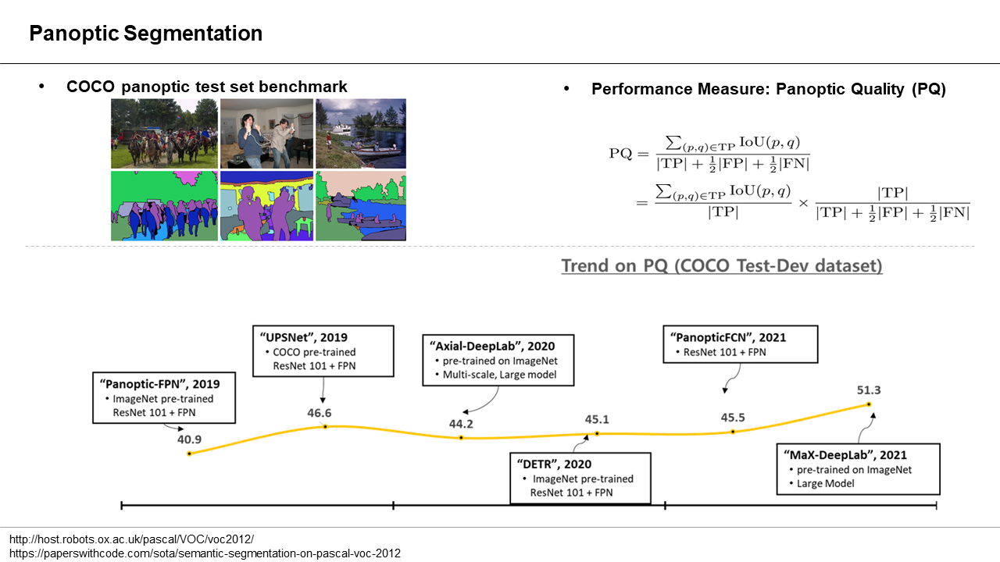

Reading List: Panoptic Segmentation¶

[Panoptic-FPN] Panoptic Feature Pyramid Networks, CVPR 19 (paper, code, review)
[PS] Panoptic segmentation, CVPR 19 (paper, code, review)
[UPSNet] UPSNet: A Unified Panoptic Segmentation Network, CVPR 19 (paper, code, review)
[Axial-DeepLab] Axial-DeepLab: Stand-Alone Axial-Attention for Panoptic Segmentation, ECCV 20 (paper, code, review)
[DETR] End-to-End Object Detection with Transformers, ECCV 20 (paper, code, review)
[VPS] Video Panoptic Segmentation, CVPR 20 (paper, code, review)
[MaX-DeepLab] MaX-DeepLab: End-to-End Panoptic Segmentation with Mask Transformers, (paper, code, review)
[EOPSN] Exemplar-Based Open-Set Panoptic Segmentation Network, CVPR 21 (paper, code, review)
[PanopticFCN] Fully Convolutional Networks for Panoptic Segmentation, CVPR 21 (paper, code, review)
Latest update: Oct, 2021